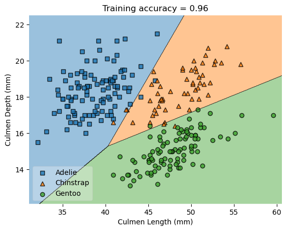

import pandas as pd
import numpy as np
from matplotlib import pyplot as plt
train_url = "https://raw.githubusercontent.com/middlebury-csci-0451/CSCI-0451/main/data/palmer-penguins/train.csv"
train = pd.read_csv(train_url)
from sklearn.preprocessing import LabelEncoder
le = LabelEncoder()
le.fit(train["Species"])
species = [s.split()[0] for s in le.classes_]
def prepare_data(df):
df = df.drop(["studyName", "Sample Number", "Individual ID", "Date Egg", "Comments", "Region"], axis = 1)
df = df[df["Sex"] != "."]
df = df.dropna()
y = le.transform(df["Species"])
df = df.drop(["Species"], axis = 1)
df = pd.get_dummies(df)
return df, y
X_train, y_train = prepare_data(train)X_train| Culmen Length (mm) | Culmen Depth (mm) | Flipper Length (mm) | Body Mass (g) | Delta 15 N (o/oo) | Delta 13 C (o/oo) | Island_Biscoe | Island_Dream | Island_Torgersen | Stage_Adult, 1 Egg Stage | Clutch Completion_No | Clutch Completion_Yes | Sex_FEMALE | Sex_MALE | |
|---|---|---|---|---|---|---|---|---|---|---|---|---|---|---|
| 1 | 45.1 | 14.5 | 215.0 | 5000.0 | 7.63220 | -25.46569 | 1 | 0 | 0 | 1 | 0 | 1 | 1 | 0 |
| 2 | 41.4 | 18.5 | 202.0 | 3875.0 | 9.59462 | -25.42621 | 0 | 0 | 1 | 1 | 0 | 1 | 0 | 1 |
| 3 | 39.0 | 18.7 | 185.0 | 3650.0 | 9.22033 | -26.03442 | 0 | 1 | 0 | 1 | 0 | 1 | 0 | 1 |
| 4 | 50.6 | 19.4 | 193.0 | 3800.0 | 9.28153 | -24.97134 | 0 | 1 | 0 | 1 | 1 | 0 | 0 | 1 |
| 5 | 33.1 | 16.1 | 178.0 | 2900.0 | 9.04218 | -26.15775 | 0 | 1 | 0 | 1 | 0 | 1 | 1 | 0 |
| ... | ... | ... | ... | ... | ... | ... | ... | ... | ... | ... | ... | ... | ... | ... |
| 269 | 41.1 | 17.5 | 190.0 | 3900.0 | 8.94365 | -26.06943 | 0 | 1 | 0 | 1 | 0 | 1 | 0 | 1 |
| 270 | 45.4 | 14.6 | 211.0 | 4800.0 | 8.24515 | -25.46782 | 1 | 0 | 0 | 1 | 0 | 1 | 1 | 0 |
| 271 | 36.2 | 17.2 | 187.0 | 3150.0 | 9.04296 | -26.19444 | 0 | 0 | 1 | 1 | 1 | 0 | 1 | 0 |
| 272 | 50.0 | 15.9 | 224.0 | 5350.0 | 8.20042 | -26.39677 | 1 | 0 | 0 | 1 | 0 | 1 | 0 | 1 |
| 273 | 48.2 | 14.3 | 210.0 | 4600.0 | 7.68870 | -25.50811 | 1 | 0 | 0 | 1 | 0 | 1 | 1 | 0 |
256 rows × 14 columns
y_trainarray([2, 0, 0, 1, 0, 0, 0, 2, 0, 2, 0, 0, 1, 1, 1, 2, 1, 2, 2, 0, 0, 1,
2, 2, 0, 2, 0, 1, 1, 0, 0, 0, 2, 0, 2, 0, 0, 0, 2, 0, 0, 0, 0, 0,
1, 0, 2, 2, 2, 1, 1, 1, 2, 2, 2, 0, 2, 0, 2, 2, 2, 0, 2, 1, 0, 0,
2, 0, 2, 2, 0, 2, 0, 0, 2, 1, 1, 2, 2, 0, 1, 2, 2, 2, 1, 0, 1, 0,
0, 0, 0, 1, 2, 0, 2, 0, 0, 2, 0, 2, 2, 0, 0, 1, 0, 2, 0, 2, 0, 2,
0, 0, 2, 2, 0, 2, 0, 2, 0, 2, 0, 2, 0, 2, 2, 0, 2, 0, 2, 0, 2, 2,
0, 2, 2, 0, 1, 2, 1, 2, 0, 0, 0, 2, 0, 0, 1, 1, 0, 2, 1, 2, 2, 2,
2, 0, 2, 0, 0, 0, 0, 1, 0, 0, 2, 2, 0, 2, 0, 1, 0, 1, 2, 1, 1, 1,
2, 0, 1, 0, 0, 1, 0, 0, 2, 0, 1, 1, 0, 1, 1, 0, 0, 1, 0, 2, 1, 2,
0, 1, 2, 0, 2, 2, 1, 1, 0, 2, 0, 0, 2, 1, 0, 2, 2, 1, 1, 2, 2, 2,
0, 2, 2, 2, 2, 0, 0, 1, 2, 1, 2, 2, 1, 2, 0, 1, 0, 0, 0, 0, 1, 2,
0, 1, 1, 0, 2, 0, 1, 1, 1, 0, 2, 0, 2, 2])from sklearn.linear_model import LogisticRegression
from mlxtend.plotting import plot_decision_regions
cols = ["Culmen Length (mm)", "Culmen Depth (mm)"]
def training_decision_regions(model, cols, **kwargs):
m = model(**kwargs)
m.fit(np.array(X_train[cols]), y_train)
plot_decision_regions(np.array(X_train[cols]), y_train, clf = m)
ax = plt.gca()
ax.set(xlabel = cols[0],
ylabel = cols[1],
title = f"Training accuracy = {m.score(np.array(X_train[cols]), y_train).round(2)}")
handles, labels = ax.get_legend_handles_labels()
ax.legend(handles,
species,
framealpha=0.3,
scatterpoints=1)training_decision_regions(LogisticRegression, cols)/Users/ndang/opt/anaconda3/envs/ml-0451/lib/python3.9/site-packages/sklearn/linear_model/_logistic.py:458: ConvergenceWarning: lbfgs failed to converge (status=1):
STOP: TOTAL NO. of ITERATIONS REACHED LIMIT.
Increase the number of iterations (max_iter) or scale the data as shown in:
https://scikit-learn.org/stable/modules/preprocessing.html
Please also refer to the documentation for alternative solver options:
https://scikit-learn.org/stable/modules/linear_model.html#logistic-regression
n_iter_i = _check_optimize_result(